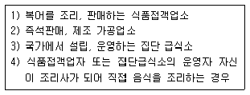
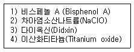
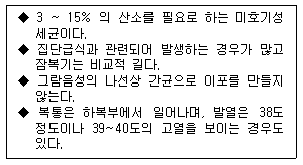
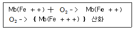
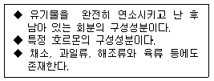

조리산업기사(공통) (2006-08-06 기출문제)
1과목: 식품위생 및 관련법규
1. 식품위생법령산 집단급식소를 올바르게 설명한 것은?
- 상시 1회 10인 이상에게 식사를 제공하는 급식소
- 상시 1회 50인 이상에게 식사를 제공하는 급식소
- 상시 1회 100인 이상에게 식사를 제공하는 급식소
- 상시 1회 200인 이상에게 식사를 제공하는 급식소
(정답률: 97%)

2. 화학적 식중독의 원인물질이 아닌 것은?
- Auramine
- alkaloid
- Dulcin
- Formaldehede
(정답률: 60%)
3. 단백질 식품의 부패에 의해 생성되는 암모니아와 휘발성 아민류를 총칭하여 무엇이라 하는가?
- 트리메틸아민
- 휘발성 염기질소
- 염소화합물
- 과산화물
(정답률: 69%)
4. 법정 전염병으로 죽은 가축이나 전염병으로 인해 오염된 물품의 살균소독법으로 가장적절한 것은?
- 증기 소독법
- 방사선 살균법
- 염소 소독법
- 소각법
(정답률: 94%)
5. 다음 중 조리사를 두어야 하는 곳으로만 짝지어진 항목은?

- 1), 2)
- 1), 3)
- 2), 4)
- 2), 3)
(정답률: 92%)
6. 식품위생법규상 영업허가를 받아야 할 업종은?
- 식품운반업
- 일반음식점영업
- 단란주점영업
- 식품냉장업
(정답률: 94%)
7. 냉장이나 냉동 등과 같이 특별한 본존방법을 사용하지 않으면 부패하기 쉬운 식품은?
- 설탕
- 감자
- 두부
- 밀가루
(정답률: 94%)
8. 감자 독을 예방하기 위한 가장 좋은 방법은?
- 발아 부위와 녹색 부위를 제거한다.
- 소금물에 담가 독소를 용출한다.
- 감자의 껍질을 벗기지 말고 사용한다.
- 소다수를 가하여 독소를 분해 한다.
(정답률: 96%)
9. 열에 감수성이 큰 식품인 우유나 파괴되기 쉬운 식품에 포함된 미생물을 제거하는데 사용하는 방법으로 60`C에서 30분정도 실시하는살균법은?
- 일광소독법
- 자비살균법
- 증기소독법
- 저온살균법
(정답률: 94%)
10. 독소형 식중독으로 분류되는 것은?
- Salmonella enterica에 의한 식중독
- Vibrio parahaemolyticus에 의한 식중독
- Campylobacter jejuni에 의한 식중독
- Staphylococcus aureus에 의한 식중독
(정답률: 67%)
11. 자외선 살균의 특징이 아닌 것은?
- 가장 유효한 살균대상은 공기와 물이다.
- 약품과 같은 잔류효과는 없다.
- 사용방법이 간단하다.
- 물체 투과력이 강하다.
(정답률: 98%)
12. 식품위생법규상 식품접객업의 시설기준으로 틀린 것은?
- 영업장은 연기, 유해가스 등의 환기가 잘 되도록 하여야 한다.
- 일반음식점의 영업장에 손님이 이용할 수 있는 음향 및 반주시설을 설치할 수 없다.
- 화장실은 조리장에 영향을 미치지 아니하는 장소에 설치하여야 한다.
- 조리장 바닥에 배수구가 있는 경우에는 덮개를 설치해야 한다.
(정답률: 90%)
13. 위생분야 종사자 등의 건강진단 규칙에 의해 조리사들이 받아야 할 건강진단 항목과 그 횟수가 맞게 연결된 것은?
- 장티푸스 - 1년 마다 1회
- 폐결핵 - 2년 마다 1회
- 전염성 피부질환 - 6개월 마다 1회
- 장티푸스 - 18개원 마다 1회
(정답률: 84%)
14. 식품위생법규에 의한 영업에 종사할 수 있는 자는?
- 비전염성 결핵환자
- 화농성 질환자
- AIDS 환자
- 콜레라 환자
(정답률: 92%)
15. 다음 보기 중 내분비교란물질(환경호르몬)에 해당되는 물질로만 묶여진 항목은?

- 1), 2)
- 1), 3)
- 2), 4)
- 1), 4)
(정답률: 74%)
16. 황변미의 원인균인 Penicillium citrinum이 생성하는 것으로 신장의 물질 재흡수 능력을 저하시키고, 신장괴저를 일으키는 유독물질은?
- citrinin
- luteoskyrin
- islanditoxin
- citreoviridin
(정답률: 83%)
17. 1968년 일본에서 공해병으로 공식 발표되었으며 만성중독으로 신장장해, 골연화증, 단백뇨 등의 증상을 나타내는 "이타이이타이"병 을 일으키는 중금속은?
- 납(pb)
- 비소(As)
- 수은(Hg)
- 카드뮴(Cd)
(정답률: 79%)
18. 식품위생법규상 식품위생상의 대상범위는?
- 식품, 식품첨가물, 기구, 용기, 포장
- 식품, 식품첨가물, 조리법, 저장법
- 식품, 식품 첨가물, 가공시설, 조리법
- 식품, 식품 첨가물, 저장법, 가공방법
(정답률: 96%)
19. 다음 특성을 지닌 식중독 원인세균의 명칭은?

- Salmonella enteritidis
- Stapphlococcus aureus
- Campylobacter jejuni
- Vibrio parahaemolyticus
(정답률: 44%)
20. 어패류의 부패에 주로 관여하는 저온 세균은?
- Candia 속
- Rhizopus 속
- Pseudomonas 속
- Lactobacillus 속
(정답률: 58%)
2과목: 식품학
21. 효소에 관한 설명 중 맞는 것은?
- lipoxigenase는 필수 지방산과 비타민 A를 생성하며 콩나물 조리시 비린내를 생성한다.
- naringinase는 감귤의 과즙과 과피의 강한 쓴맛을 증가시키는 효소이다.
- 피신(ficin)은 무화과에 존재하는 단백질 분해효소이다.
- pectinase는 펙틴(pectin)을 가수분해해서 pectinic acid와 metanol을 생성하는 효소이다.
(정답률: 72%)
22. 거품을 낸 달걀흰자를 샤베트나 캔디를 만들 때 섞어주면 결정체 형성을 방해하여 미세하게 만든다. 이것은 달걀의 무슨 성질 때문인가?
- 유화제
- 농후제
- 간섭제
- 팽창제
(정답률: 65%)
23. 토마토나 수박의 붉은색 색소명과 색소의 분류는?
- 루테인(lutein) - 카로티노이드
- 라이코펜(lycopene) - 카로티노이드
- 퓨코크산틴(fucoxanthin) - 안토시안
- 크립토크산틴(cryptoxanthin) - 안토시안
(정답률: 86%)
24. 발효를 이용하여 만든 떡은?
- 시루떡
- 인절미
- 백설기
- 증편
(정답률: 93%)
25. 상록 관목수의 진녹색 잎으로 일반적으로 말리면 연한 올리브 녹색으로 변하며, 잎을 스파이스로 이용한다. 상큼한 향기와 다소 쓴맛이나며 부케가르니를 만들 때 꼭 필요하며, 서구에서 여러 요리에 광범위하게 사용되는 향신료는?
- 차이브(Chive)
- 월계수잎(Bay leaf)
- 파슬리(Parsley)
- 다임(Thyme)
(정답률: 86%)
26. 감칠맛을 내는 아미노산은?
- 글루탐산
- 트립토판
- 알라닌
- 라이신
(정답률: 86%)
27. 결합수의 특성이 아닌 것은?
- 수증기 앞이 보통 물보다 낮다.
- 보통의 물보다 밀도가 작다.
- 미생물의 번식과 발아에 이용되지 못한다.
- 식품중의 단백질이나 당류와 결합되어 있다
(정답률: 49%)
28. 버섯에 함유된 비타민 D의 전구체 물질은?
- 콜레스테롤(Cholesterol)
- 만니톨(Mannitol)
- 에르고스테롤(ergosterol)
- 알칼로이드(alkaloid)
(정답률: 87%)
29. 메밀에 대한 설명 중 틀린 것은?
- 메밀단백질에는 알부민(albumin)과 글루텔린(gluteliin)이 약 40% 정도씩 함유되어 있다.
- 메밀 단백질에는 프로라민(prolamine)이 적어 점성이 거의 없다.
- 메밀단백질에는 다른 곡류에 비하여 라이신 (lysin)과 트립토판 (tryptophan)이 적게 들어 있다.
- 메밀에 들어 있는 루틴(rutin)은 뇌출혈을 방지하는 효과가 있다.
(정답률: 75%)
30. 과일, 채소류의 저장 중 발생하는 "품질저하 현상 - 품질변화 요인 - 억제방법"이 순서대로 올바르게 연결된 것은?
- 호흡작용(성분 소모) - 자체내 효소작용 - 온도조절
- 발아, 발근 - 증산작용 - 온도조절
- 수분손실 - 자체 내 효소작용 - 피막형성
- 후숙작용(연화, 변색) - 증산작용 - 방사선 조사
(정답률: 74%)
31. 설탕의 특징이 아닌 것은?
- 이성체가 존재하므로 단맛이 일정하지 않다.
- 가수분해하면 포도당과 과당이 된다.
- 감미표준물질로 사용된다.
- 사탕무, 사탕수수에 많이 들어 있다.
(정답률: 80%)
32. 냉동식품이 냉동중에 건조, 지질 산패 등에 의해 나타나는 현상은?
- 빙의처리
- 냉동화상
- 드립 현상
- 질식육 현상
(정답률: 65%)
33. 비타민 결핍증의 연결이 잘못된 것은?
- 비타민 A - 야맹증
- 비타민 B1 - 각기병
- 나이아신(niacin) - 펠라그라
- 비타민 C - 치매
(정답률: 80%)
34. 미오글로빈이 변색되는 과정이다. 다음 { }에 있는 구조를 지닌 성분은?

- 옥시미오글로빈(oxymyoglobin)
- 니트로소미오글로빈(nitrosomyoglbin)
- 메트미오글로빈(metmyoglobin)
- 헤마틴(hematin)
(정답률: 70%)
35. 다음과 같은 특징을 가지는 영양소는?

- 비타민
- 단백질
- 무기질
- 섬유소
(정답률: 78%)
36. 날콩의 독성 단백질로서 동물의 적혈구를 응집시키는 것은?
- 안티트립신(antitrypsin)
- 사포닌(saponin)
- 헤마글루티닌(hemagglutinin)
- 아플라 톡신(aflatoxin)
(정답률: 61%)
37. 전분의 가수분해 과정에서 생기는 물질이 아닌 것은?
- 프로테우스
- 말토오스
- 덱스트린
- 글루코오스
(정답률: 54%)
38. 단백질의 변성과 관계없는 것은?
- 두부
- 치즈
- 청포묵
- 푸딩
(정답률: 70%)
39. 해산동물의 일종으로 두꺼운 한천질로 된 우산 부위를 석회와 백반으로 처리하고 수분을 제거하여 보존식품 형태로도 판매되며, 냉채 등에 이용되는 식재료는?
- 한천
- 패주
- 해파리
- 죽생
(정답률: 87%)
40. 수분활성도 (Aw)에 영향을 미치는 요인이 아닌 것은?
- 식품 내의 불용성 물질의 함량
- 대기 중의 상대습도
- 식품에 녹아있는 용질의 종류
- 식품에 녹아있는 용질의 양
(정답률: 40%)
3과목: 조리이론 및 급식관리
41. 식단 작성의 목적이 아닌 것은?
- 운영비용 절감
- 잔반율 증가
- 재고 파악에 대한 타당성
- 균형 있는 영양공급
(정답률: 91%)
42. 냉장고에 식품을 저장할 때 주의할 점이 아닌 것은?
- 냉장고 안의 온도가 0℃를 넘어가지 않도록 주의한다.
- 가능하면 냉장고의 개폐 횟수를 줄여야 한다.
- 냉장고 수납량은 내부용적의 60~65% 정도를 유지하여야 한다.
- 냉장고에 온도를 설치하여 하루 2회 이상의 정기적인 온도점검을 한다.
(정답률: 75%)
43. 다음 향신료의 성분을 바르게 나타낸 것은?
- 후추의 매운맛 성분은 캡사이신이다.
- 겨자의 매운맛 성분은 미로시나아제이다.
- 생강의 매운맛 성분은 진저롤이다.
- 고추의 매운맛 성분은 차비신이다.
(정답률: 92%)
44. 각 요소별 계산, 부문별 계산, 제품별 계산간에 서로 밀접하게 관련되어야 하는 원가의 원칙은?
- 상호관리의 원칙
- 확실성의 원칙
- 발생기준의 원칙
- 계산경제의 원칙
(정답률: 69%)
45. 다음 중 노화가 가장 더디게 일어나는 것은?
- 찹쌀
- 식빵
- 보리밥
- 옥수수
(정답률: 60%)
46. 습식가열방법으로 옳게 연결된 것은?
- 찌기, 굽기
- 끓이기, 굽기
- 찌기, 끓이기
- 굽기, 튀기기
(정답률: 89%)
47. 재고회전율 및 회전기간의 산출방법으로 옳은 것은?
- 재고회전율 = 총 출고액 ÷ 마감재고액
- 재고회전율 = 총 출고액 ÷ 초기재고액
- 재고회전기간 = 수요검토기간 ÷ 재고회전율
- 재고회전기간 = 재고회전율 ÷ 수요검토기간
(정답률: 48%)
48. 가장 보편적인 매니지먼트 사이클은?
- 계획 → 통제 → 조직 → 조정 → 지휘
- 계획 → 조직 → 조정 → 지휘 → 통제
- 조직 → 계획 → 조정 → 지휘 → 통제
- 조직 → 조정 → 통제 → 지휘 → 계획
(정답률: 65%)
49. 식품의 완벽한 검수사항에 해당되지 않는 것은?
- 검수비용
- 검수설비
- 검수기기
- 검수공간
(정답률: 65%)
50. 달걀의 조리방법에 대한 설명 중 맞는 것은?
- 난백을 거품낼 때 소금을 첨가하면 거품의 안정성이 좋아진다.
- 황화철의 생성을 감소시키기 위해서는 끓는물에서 가열시간을 길게 하여야 한다.
- 수란을 뜰 때 식초를 첨가하면 응고가 빨리된다.
- 소량의 우유를 첨가하면 기포형성이 촉진된다.
(정답률: 82%)
51. 순환식 식단(Cycle menu)에 대한 설명이 맞는 것은?
- 주간식단은 3일 단위로 회전되는 식단이다.
- 순간식단은 10일 단위로 회전되는 식단이다.
- 월간식단은 2주일 단위로 회전되는 식단이다.
- 연간식단은 1계절 단위로 회전되는 식단이다.
(정답률: 44%)
52. 작업개선의 목표가 아닌 것은?
- 신속성
- 경제성
- 정확성
- 전문성
(정답률: 47%)
53. 직무배분표를 작성할 때 유의해야 할 사항이 아닌 것은?
- 가장 많은 시간과 인원이 필요한 직무
- 기능의 적절한 이용 여부
- 작업의 평균적 할당 여부
- 조리종사원의 인간관계
(정답률: 89%)
54. 재무실사 재고조사에서 전월 재고액이 3,000원 이고, 회기기간 동안 식품구입액이 9,000원이며 금월 재고액이 2,225원 이라면 금월에 실제 식품비로 사용한 금액은 얼마인가?
- 9,000원
- 9,550원
- 9,775원
- 12,000원
(정답률: 75%)
55. 채소를 삶는 방법으로 잘못된 것은?
- 죽순을 쌀뜨물에 삶으면 색이 희어진다.
- 연근은 껍질을 벗겨 5-10% 중조수에 담근 후 삶는다.
- 고구마를 삶을 때는 명반을 넣는다.
- 무는 쌀뜨물이나 밀가루를 조금 넣어 삶으면 맛이 좋다.
(정답률: 54%)
56. 식품을 물이나 조미액에 담그는 효과에 대한 설명으로 가장 거리가 먼 것은?
- 식품에 수분을 흡수, 팽윤시켜서 연하게 한다.
- 불미성분을 용출시켜 맛을 좋게 한다.
- 변색을 방지하고 보존성을 높여준다.
- 생리식염수 농도인 1% 정도의 소금물에 담가두면 영양분손실이 전혀 없다.
(정답률: 75%)
57. 국제 직무 평가회의에서의 직무평가 요소항목 중 관계없는 것은?
- 정신적 요건
- 신체적 요건
- 권위
- 책임
(정답률: 81%)
58. 주방설비 계획의 기본요소는?
- 위생, 능률, 동력
- 위생, 경제, 동력
- 위생, 능률, 경제
- 경제, 동력, 능률
(정답률: 73%)
59. 조리시 에너지 전달방법 중 열의 전달 속도가 가장 빠른 방법은?
- 전도
- 대류
- 복사
- 유도
(정답률: 71%)
60. 토마토 크림스프를 만들 때 사용되는 우유에 함유된 응고 주성분은?
- 락트알부민(lactalbumin)
- 락토글로불린(lactoglobulin)
- 카제인(casein)
- 레닌(renin)
(정답률: 78%)
4과목: 공중보건학
61. DTaP와 관련 있는 질병으로만 짝지어진 것은?
- 백일해, 천연두, 파상풍
- 파상풍, 폴리오, 결핵
- 백일해, 폴리오, 디프테리아
- 디프테리아, 백일해, 파상풍
(정답률: 72%)
62. 미나마타병의 원인 물질은?
- 수은
- 아연
- 납
- 비소
(정답률: 82%)
63. 병원체가 매개곤충 내에서 일정기간 발육 또는 증식 등의 변화를 거쳐 전파되는 방식은?
- 직접 전파
- 기계적 전파
- 화학적 전파
- 생물학적 전파
(정답률: 71%)
64. 다음 중 제1종 전염병에 해당되는 것은?
- 장티푸스
- B형 간염
- 일본뇌염
- 말라리아
(정답률: 63%)
65. 전염병 유행의 3대 요인으로 바르게 짝지어진 것은?
- 전염원, 전염경로, 감수성 숙주
- 병원체, 병원소, 전파
- 병원체, 병원소, 병원체 침입
- 전파, 병원체 침입, 숙주
(정답률: 70%)
66. 먹는 물이나 음식물을 통하여 전파되는 소화기계 전염병이 아닌 것은?
- 폴리오
- 장티푸스
- 세균성이질
- 렙토스피라증
(정답률: 62%)
67. 밀폐된 실내에 다수인이 밀집되어 있을 때, 군집독(Crowd poisoning)이 일어나기 쉽다. 가장 중요시 되는 예방책은?
- 환기
- 호흡조절
- 체온보호
- 수분공급
(정답률: 92%)
68. 다음 중 사회적 환경에 해당하는 것은?
- 소리
- 의복
- 광선
- 진균
(정답률: 80%)
69. 불량조명에 의해 발생되는 직업병은?
- 안정피로
- 규폐증
- 잠항병
- 열경련
(정답률: 92%)
70. 암수구별이 있는 기생충으로 짝지어진 것은?
- 회충, 구충
- 무구조충, 편충
- 유구조충, 무구조충
- 간흡충, 광절열두조충
(정답률: 50%)
71. 파리가 전파할 수 있는 전염병과 가장 거리가 먼 것은?
- 장티푸스
- 세균성 이질
- 수면병
- 말라리아
(정답률: 68%)
72. 홍역에 관한 설명 중 옳은 것은?
- 세균에 의한 전염병이다.
- 일반적으로 성인이 많이 걸리는 전염병이다.
- 열과 발진이 생기는 호흡기계 전염병이다.
- 자연 능동면역으로 일시 면역된다.
(정답률: 75%)
73. 바퀴벌레의 습성이 아닌 것은?
- 군거성
- 잡식성
- 질주성
- 주간활동성
(정답률: 95%)
74. 인체의 체온조절 현상과 가장 거리가 먼 것은?
- 기온
- 기습
- 기류
- 기압
(정답률: 89%)
75. 동물이나 식물에게 가장 큰 피해를 주는 오염 물질은?
- 아황산가스
- 이산화질소
- 산소
- 이산화탄소
(정답률: 68%)
76. 고무상입자로서 크기가 가장 큰 것은?
- 연무(mist)
- 훈연(fume)
- 분진(dust)
- 매연(smoke)
(정답률: 85%)
77. 채소류를 통하여 감염되는 기생충이 아닌 것은?
- 회충
- 톡소플라즈마
- 구충
- 동양모양선충
(정답률: 68%)
78. 잠항병의 주요 원인이 되는 공기의 성분은?
- 질소
- 산소
- 일산화탄소
- 이산화탄소
(정답률: 77%)
79. 돼지고기를 생식할 때 충란 섭취로 뇌, 안구, 근육 등에 낭미충증을 일으키는 기생충은?
- 유구조충
- 무구조충
- 광절열두조충
- 우극악구충
(정답률: 89%)
80. 현대 환경오염의 특성으로 가장 거리가 먼 것은?
- 생태학적 질서의 파괴
- 특수 물질화
- 누적화
- 광역화
(정답률: 42%)